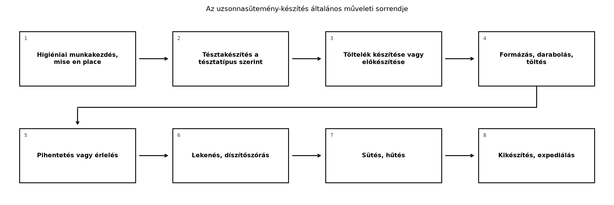

Reggel hat óra van a cukrászüzemben. A pult még üres, de a délelőtti vendégforgalomra kakaós csigát, túrós táskát, sajtos pogácsát és fahéjas csigát kell kisütni. Ha minden terméket külön-külön, egymás után kezdenél el, délig sem végeznél. A gyakorlott cukrász ezért tésztacsaládonként gondolkodik: először az élesztős tésztákat indítja, közben elkészíti a hideg tölteléket, majd a sütőt folyamatosan járatja. Ebben az alfejezetben az uzsonnasütemények közös műveleti vázát tanulod meg. Ez a váz később minden uzsonnasütemény-alfejezetben visszaköszön.
Képzelj el egy műhelyasztalt. Bal oldalon a tésztagép, középen a nyújtódeszka, jobb oldalon a sütő. A pulton egymás mögött sorakoznak a tálcák: az egyiken kelő kakaós csiga, a másikon már lekent, sütésre váró sajtos pogácsa, a harmadikon hűlő túrós táska. A munka nem termékenként halad, hanem műveletenként: előbb minden tésztát bekészítenek, aztán minden darabot megformáznak, végül sütnek. Az alábbi ábra ezt a közös műveleti láncot mutatja.

Az ábra azt tanítja: a sorrend nem felcserélhető. A lekenés a sütés előtt, a töltés a pihentetés előtt történik, a hűtött tölteléket pedig csak a felhasználás előtt vesszük ki a hűtőből.
Definíció. Az uzsonnasütemény olyan, jellemzően egy adagos, sütött tésztából készült termék, amelyet reggelire, uzsonnára vagy második reggelire fogyasztanak; tésztája a felhasznált lazítási mód szerint élesztős, omlós, leveles/vajas, forrázott, felvert vagy hengerelt tészta lehet. A termék tömege a cukrászati gyakorlatban általában 60–120 g/db, de a típus és a töltelék szerint ettől eltérhet (ellenőrizendő: Magyar Élelmiszerkönyv, sütőipari és cukrászati termékek megnevezése).
A csoportosítás alapja a tésztatípus, mert a tésztakészítés és a formázás műveletei ehhez igazodnak.
| Tésztacsoport | Lazítás módja | Jellemző uzsonnasütemények | Jellemző töltelék, díszítés |
|---|---|---|---|
| Gyúrt vagy kevert élesztős | biológiai, élesztő | kakaós csiga, túrós táska, bukta, fánk | kakaós, túrós, lekvár, puding |
| Hajtogatott élesztős | biológiai + mechanikai | croissant, diós csiga | nincs, vagy sütésálló töltelék |
| Omlós élesztős | biológiai + zsiradékos omlós | pozsonyi kifli, beigli, sajtos csiga | diós, mákos, sós-sajtos |
| Omlós | zsiradékos | vajas linzer, sós pogácsa | lekvár, sajt, túró |
| Vajas/leveles | mechanikai, gőzréteggel | leveles túrós batyu, almás leveles | túró, alma, sárgakrém |
| Felvert | habos | piskótatekercs, babapiskóta, felvert lepény | tejszín, gyümölcs |
| Hengerelt | mandulás massza, tojásfehérje, sütés formázás után | sütőmarcipán, makron | krém, lekvár, porcukor |
| Mézes | méz + kémiai lazítás | mézeskalács-szerű, gyömbéres falatok | nincs, vagy máz |
Továbbvitt eredmény. Ezt a csoportosítást és a hozzá tartozó közös műveletsort használjuk a következő alfejezetekben: Gyúrt és kevert élesztős uzsonnasütemények; a fánk, Hajtogatott élesztős uzsonnasütemények, Omlós élesztős uzsonnasütemények: pozsonyi kifli, beigli, pogácsák, Omlós tésztából készült uzsonnasütemények és Vajas, leveles, felvert és hengerelt tésztából készült uzsonnasütemények.
A következő általános műveletsor a tésztacsaládok többségére illik. Az egyes alfejezetekben a tésztatípusra jellemző hőfokokat, időket és arányokat pontosítjuk.
Higiénia. Munkaruha, hajháló, ékszer nélkül kezdj. Kézmosás után fertőtlenített felületen, tiszta eszközökkel dolgozz. A nyersanyagokat mérd le, ellenőrizd a csomagolást, a minőséget és az allergénjelölést. A hűtőlánc megszakadása nélkül készítsd elő a tojást, tejet, vajat.
A tésztát mindig az adott tésztatípus receptúrája szerint készítsd. Az élesztős tésztánál először az élesztőt futtasd fel vagy keverd az előtésztához. Az omlós tésztánál a hideg vajat mielőbb morzsold el a liszttel, hogy ne olvadjon meg. A leveles tésztánál a tészta és a hajtogatózsiradék hőfoka kb. 12–16 °C legyen, egymáshoz közel (ellenőrizendő: zsiradék gyártói adatlapja). A felvert tésztánál a tojáshabot és a lisztet óvatosan forgasd össze.
Megjegyzés. Minden tésztakészítési lépésnél tartsd be a gépbiztonsági szabályt: Biztonsági korlát. A gépi művelet tanműhelyi vagy üzemi környezetben, oktatás után és felügyelet mellett végezhető; otthon háztartási géppel, kis adagban gyakorolj.
Az uzsonnasütemények tölteléke legyen sűrű, sütésálló és könnyen formázható. A gyümölcs-, dió- és máktöltelékeket a Töltelékek részben tanult módon, előfőzve készítsd. A hűtött tölteléket csak közvetlenül a formázás előtt vedd ki a hűtőből. Ha a töltelék túl folyós, sütés közben kifolyik.
A tésztát egyenletes vastagságúra nyújtsd, majd darabold. A darabokat lehetőleg azonos tömegűre készítsd: mérd le az első darabot, és tartsd a receptúra szerinti tűrésen belül. A tölteléket ne vidd túl közel a széléhez, és a hajtásnál, zárásnál jól dolgozd össze. A töltetlen felületen, például kakaós csigánál a kakaóréteg ne érjen a legkülső peremre, mert sütés közben lefolyik.
A formázott darabokat egyenlő közökkel, sakktáblaszerűen rakjuk a sütőpapíros lemezre, a lemez szélétől is távolságot hagyva, mert a darabok kelés és sütés közben tágulnak. Az alábbi ábra a helyes és a túl sűrű (összenőtt, a szélen megégett, középen nyers) kiosztást veti össze.
Az élesztős tésztát kelni kell. A kelesztés során a tészta térfogata nő, az íze és a bélszerkezete kialakul. A kelesztés ideje 25–45 perc, 28–32 °C-on, 70 % relatív páratartalom mellett (ellenőrizendő: üzemi kelesztőberendezés jellemzői). Az omlós és leveles tésztát hidegen pihentesd, hogy a zsiradék visszadermedjen, a sikérszálak pedig lazuljanak. A formázott darabokat kelesztés előtt ne takard le nedves kendővel, ha az ráeshet és ragacsos felületet okozhat; használj inkább fóliát vagy kelesztőszekrényt.
A lekenés célja a szép szín, a fényes felület és a szezámmag, kömény vagy sajt ráragasztása. A leggyakoribb lekenőanyag a felvert egész tojás, esetleg tejjel vagy vízzel hígítva. A tojásos lekenés a sütés során hőkezelődik, ezért ebben a műveletben önálló kritikus pontot nem jelent, de a felvitt maradékot ne öntsd vissza a nyers tojásos edénybe, és a kimaradt tojást hűtve tárold. Allergénként a tojást a késztermék címkéjén fel kell tüntetni.
A sütőt mindig előmelegítsd. A sütési hőmérséklet tésztatípusonként eltérő: az élesztős és leveles tészták általában 180–210 °C, az omlós és forrázott tészták 160–180 °C, a felvert és hengerelt tészták 170–190 °C körül sülnek (ellenőrizendő: gyártói sütőleírás, üzemi receptúra). A sütés akkor kész, ha a termék felülete a típusra jellemző színű, a széle stabil, a belső maghőmérséklet élelmiszer-biztonsági szempontból legalább 75 °C (ellenőrizendő: NÉBIH útmutató, üzemi HACCP-terv); a sütöttséget azonban élesztős tésztánál a kb. 92–96 °C-os maghőmérséklet, a szín és a kopogtatási próba jelzi (ellenőrizendő: üzemi receptúra), mert 75–80 °C-on az élesztős tészta bele még nyúlós. A sütés utáni hűtést rácsra téve végezd, hogy a termék alja ne párásodjon be.
A kész terméket csak tiszta felületre, tiszta edénybe helyezd. Az el nem adott darabokat a hűtést követően lefedve, a termékre jellemző hőmérsékleten tárold. A krémes, tejes töltelékű darabok hűtve 4 °C alatt tárolandók; a szárazabb, sós vagy élesztős darabok rövid ideig tarthatók 18–20 °C alatt, a gyártói vagy üzemi gyakorlat szerint (ellenőrizendő: hatályos vendéglátó-kereskedelmi útmutató).
Számítás. Egy uzsonnasütemény-sorozat megtervezésekor a sütő kapacitását és a tömegellenőrzést is ki kell számítani.
Adott: 60 db kakaós csigát kell sütni. Egy tepsin 12 db fér el, a sütőbe egyszerre 2 tepsi tehető. Egy forduló sütési ideje 18 perc, a berakás-kivétel egy fordulóban 2 perc.
Keresett: hány forduló kell, és mennyi lesz a teljes sütési folyamat ideje?
Képlet: a fordulónkénti darabszám
A fordulók száma, ha az utolsó hiányos forduló is teljeset jelent:
Behelyettesítés és eredmény:
A teljes idő:
Ellenőrzés: 3 fordulóban 3×24=72 db kapacitás van, tehát a 60 db kényelmesen elfér; a fennmaradó 12 db-nyi helyet más termékkel is ki lehet tölteni. ∎
Adott: egy uzsonnasütemény-sorozatból 64 db készült, az összes sütött tömeg 4 864 g. A termék előírt tömege 75 g/db, a műhelytűrés ±5 g.
Keresett: megfelel-e az átlag a tömegelőírásnak, és mit kell még ellenőrizni?
Képlet:
Behelyettesítés és eredmény:
Az átlag 76,0 g, ami a 70–80 g tűrésen belül van. Ellenőrzés: az átlag önmagában nem elég, mert lehet köztük 60 g-os és 92 g-os darab is; ezért a gyakorlatban egyenként is mérjük a kiszúrópróba-szerűen kivett darabokat, vagy a sorozat elején, közepén, végén mért darabokat hasonlítjuk össze. ∎
Jogszabály. Az uzsonnasütemény előállításakor is be kell tartani az élelmiszer-higiéniai rendeletet (852/2004/EK) a tisztaságra, a hőmérsékleti láncra és a keresztszennyeződés elkerülésére; a fogyasztói tájékoztatási rendeletet (1169/2011/EU) pedig a 14 jelölendő allergéncsoportra. A tojás, glutén, tej, diófélék, földimogyoró, szezám, szója, kén-dioxid előfordulását a késztermék jelölésénél fel kell tüntetni. A lekenéshez használt nyers tojás a sütés során hőkezelődik, de a munkaasztalon, kezen, eszközön maradt tojástartalmú szennyeződés más terméket keresztszennyezhet. A sütési maghőmérsékletet és a tárolási hőfokot az üzemi HACCP-terv (852/2004/EK 5. cikk) és a NÉBIH jó higiéniai gyakorlati útmutatója szerint kell meghatározni; a termék mikrobiológiai megfelelőségét a 2073/2005/EK rendelet kritériumai szerint lehet vizsgálni (ellenőrizendő: hatályos útmutató).
Az uzsonnasüteményt érzékszervileg és tömegre is ellenőrizzük.
| Minőségi jellemző | Elvárás |
|---|---|
| Forma | a típusra jellemző, szabályos, a töltelék nem folyik ki |
| Tömeg | receptúra szerinti, a tűrésen belül |
| Felület | egyenletes színű, fényes vagy a szabványnak megfelelő, nem égett, nem fakó |
| Belső szerkezet | átsült, a tésztaréteg nem nyers, a töltelék egyenletesen oszlik el |
| Íz | a tésztára és a töltelékre jellemző, idegen íztől mentes |
| Illat | kellemes, sütőipari, nem savanyú, nem élesztőszagú |
| Állag | friss, párás, de nem ragadós, a tésztaréteg nem száradt |
A tömegellenőrzést tized grammos pontossággal végezd. A lekenés színét a sütőajtó üvegén keresztül is ellenőrizheted, de a sütőt ne nyitogasd feleslegesen.
Hiba 1: a töltelék kifolyik sütés közben. Tünet: a töltelék a tepsin megég, a termék alja ragad. Oka: túl folyós töltelék, a tészta széle nem zárt, túl magas sütőhőmérséklet. Megelőzés: a tölteléket sűrűbbre készítsd, a széleket jól nyomd össze, a sütőt a receptúra szerint állítsd be.
Hiba 2: a termék fakó, de belül nyers. Tünet: a felület világos, a bélzet tömör, nyúlós. Oka: alacsony sütőhőmérséklet, túl rövid sütési idő, hideg tészta, túl nagy darabok. Megelőzés: sütő előmelegítése, maghőmérséklet mérése, azonos darabnagyság.
Hiba 3: a termék kiszárad, a széle repedezik. Tünet: a felület kemény, a bélzet morzsálódik. Oka: túl hosszú sütés, túl magas hőmérséklet, túl hosszú kelesztés. Megelőzés: az idő-hőmérséklet naplózása, a sütő hőfokának kalibrálása.
Hiba 4: a lekenés csíkos vagy egyenetlen. Tünet: a felületen sötét és világos sávok. Oka: a tojást nem verték fel egyenletesen, a lekenés előtt a tészta felülete megszáradt, a kenőecset túl vastag vagy a tojás túl kevés. Megelőzés: szobahőmérsékletű, jól elkevert tojással, puha kenőecsettel dolgozz; a kissé megszáradt felületet ne vizezd fel, hanem azonnal kend.
Egy kis cukrászda szombat reggelre 30 kakaós csigát, 20 túrós táskát és 15 sajtos pogácsát ígért. A tanuló reggel 5:45-kor kezdett. Először a hűtőből kivette a lehűtött túrót és a pogácsához való vajat; a hideg anyagokat csak annyi időre hagyta ki, amíg a tészta összeáll. A kakaós tésztát dagasztógépben keverte, majd 35 percig kelesztette. Ezalatt megformázta a pogácsa omlós tésztáját, és hűvös helyre tette. A kakaós csigák formázása után a sütőt 185 °C-ra állította. A túrótölteléket közvetlenül a formázás előtt vette ki a hűtőből, a táskákat töltés után 15–20 percig kelesztette, majd sütötte; a hűtött túrótöltelék hidegen könnyebben formázható. A sütőt három fordulóban járatta: először a pogácsát, majd a kakaós csigát, végül a túrós táskát sütötte. Az utolsó forduló után a sütőt azonnal kitakarította, a leesett feltétmaradványt pedig a hulladékba gyűjtötte. A kész darabokat rácson hűtötte, a túrós táskákat a délelőtti forgalomig 4 °C alatt tárolta. A vendég nem panaszkodott; a termékek elfogytak, mert a sorrend betartásával a frissesség is megmaradt.
1. feladat (A) Sorold fel az uzsonnasütemény-készítés 8 közös műveleti lépését a higiéniai munkakezdéstől az expediálásig.
2. feladat (A) Melyik tésztacsoporthoz tartozik a beigli és a pozsonyi kifli? Milyen a lazításuk?
3. feladat (B) Egy üzemben 80 db sajtos pogácsát kell sütni. Egy tepsin 20 db fér el, a sütőben egyszerre 2 tepsi süt. Hány forduló kell, ha az utolsó is teljes fordulónak számít? A sütési idő 15 perc, a kivétel-berakás 2 perc. Mennyi a teljes sütőidő?
4. feladat (B) Egy uzsonnasütemény-sorozat 36 darabból áll, összes tömegük 2 808 g. Írd fel az átlag számítását, és döntsd el, megfelel-e a 80 g-os előírásnak ±5 g tűréssel. Milyen kiegészítő ellenőrzést javasolsz?
5. feladat (C) A tanuló a kakaós csigák formázása után úgy dönt, hogy az egyik tepsi tetejére nedves konyharuhát terít, hogy ne száradjon ki. A sütés után a felület foltos, néhol nyers, a kakaó pedig lefolyt. Mi lehet a hiba: a nedves takarás, a töltelék, a sütő hőfoka vagy a lekenés? Indokold, és javasolj javítást.
6. feladat (D) Tervezd meg egy 40 db túrós táska készítésének munkafolyamatát a következő feltételekkel: a töltelék hűtött, a tészta gyúrt élesztős, a sütőbe 2 tepsi fér, egy tepsin 15 db süt. Készíts műveleti sorrendet, jelöld a hűtőből kivétel pillanatát, a kelesztést, a sütést és a tárolást. Értékeld a tervedet a frissesség, élelmiszerbiztonság és sütőkapacitás szempontjából.
Önellenőrzés – válaszok:
1. feladat (A) megoldása: A nyolc lépés: (1) higiéniai munkakezdés és mise en place, (2) tésztakészítés, (3) töltelékkészítés/előkészítés, (4) formázás, darabolás, töltés, (5) pihentetés/érlelés, (6) lekenés, díszítőszórás, (7) sütés, hűtés, (8) kikészítés, expediálás.
2. feladat (A) megoldása: A beigli és a pozsonyi kifli az omlós élesztős tészták közé tartozik; lazításuk biológiai (élesztő) és zsiradékos egyszerre. A diós/mákos töltelék a Gyümölcstöltelékek, olajos magvas és tartós töltelékek alfejezetből való.
3. feladat (B) megoldása:
Adott: 80 db, egy tepsin 20 db, sütőben 2 tepsi,
sütési idő 15 min, berakás-kivétel 2 min.
Keresett: fordulószám, teljes sütőidő.
Képlet:
Ellenőrzés: 2 fordulóban 80 db pontosan elfér. ∎
4. feladat (B) megoldása:
A 80 g-os előírás tűrése ±5 g, azaz 75–85 g. Az átlag 78 g, tehát megfelel. Kiegészítőként egyenként is érdemes mérni, mert lehetnek 70 g alatti darabok.
5. feladat (C) megoldása: A hiba elsősorban a nedves takarásból és abból adódik, hogy a kakaótöltelék túl folyós lehet, valamint a nedves kendő miatt a felület lehűl, a lekenés nem tud rendesen rásülni, a tészta pedig ragad. A javítás: ne használj nedves kendőt; inkább fóliával vagy kelesztőszekrénnyel takard. A kakaótölteléket sűrűbbre kell készíteni, a lekenést pedig csak közvetlenül a sütés előtt kell felvinni.
6. feladat (D) megoldása (értékelési
szempontok):
- Higiéniai munkakezdés, mise en place.
- A túrót a formázás előtt röviddel ki kell venni a hűtőből, ne álljon
melegen.
- A gyúrt élesztős tésztát dagasztás után kelni kell 30–40 percig
(ellenőrizendő).
- Formázás és töltés után a táskák 15–20 percig kelnek.
- A sütőforduló: 2 tepsi × 15 db = 30 db/forduló, 40 db-hoz 2 forduló
kell; az első forduló után a második adagot hűvös helyen
kelesztheti.
- Sütés 185–195 °C, 18–22 perc, biztonsági maghőmérséklet legalább 75
°C, sütöttségi jel kb. 92–96 °C (ellenőrizendő).
- Hűtés után a túrós táskákat 4 °C alatt tárold.
A terv akkor jó, ha a hűtött töltelék nem melegszik fel, a tészta nem
kel túl, a sütőt folyamatosan járatja, és a kész termék mihamarabb
hűtésre kerül.
Az uzsonnasütemény olyan, többnyire 60–120 g-os, sütött, egy adagos termék, amelynek csoportját a tésztatípus határozza meg. A fő csoportok: gyúrt/kevert élesztős, hajtogatott élesztős, omlós élesztős, omlós, vajas/leveles, felvert és hengerelt. A közös műveletsor: higiéniai munkakezdés, tésztakészítés, töltelék előkészítése, formázás, töltés, pihentetés, lekenés, sütés, hűtés, expediálás. A kelesztést, a lekenést és a sütést a tésztatípushoz kell igazítani; a hűtött tölteléket csak közvetlenül a felhasználás előtt vedd ki. A biztonsági maghőmérséklet legalább 75 °C (ellenőrizendő), de a sütöttséget élesztős tésztánál kb. 92–96 °C-os maghőmérséklet és a típusnak megfelelő felület jelzi (ellenőrizendő). Továbbvitt eredmény. Ezt az általános műveletsort használjuk az egyes uzsonnasütemény-csoportok alfejezeteiben: Gyúrt és kevert élesztős uzsonnasütemények; a fánk, Hajtogatott élesztős uzsonnasütemények, Omlós élesztős uzsonnasütemények: pozsonyi kifli, beigli, pogácsák, Omlós tésztából készült uzsonnasütemények, Vajas, leveles, felvert és hengerelt tésztából készült uzsonnasütemények. A munkafolyamat tervezésekor a sütőfordulókat és a darabtömeget mindig számold ki, és az allergén keresztszennyeződést ellenőrizd.